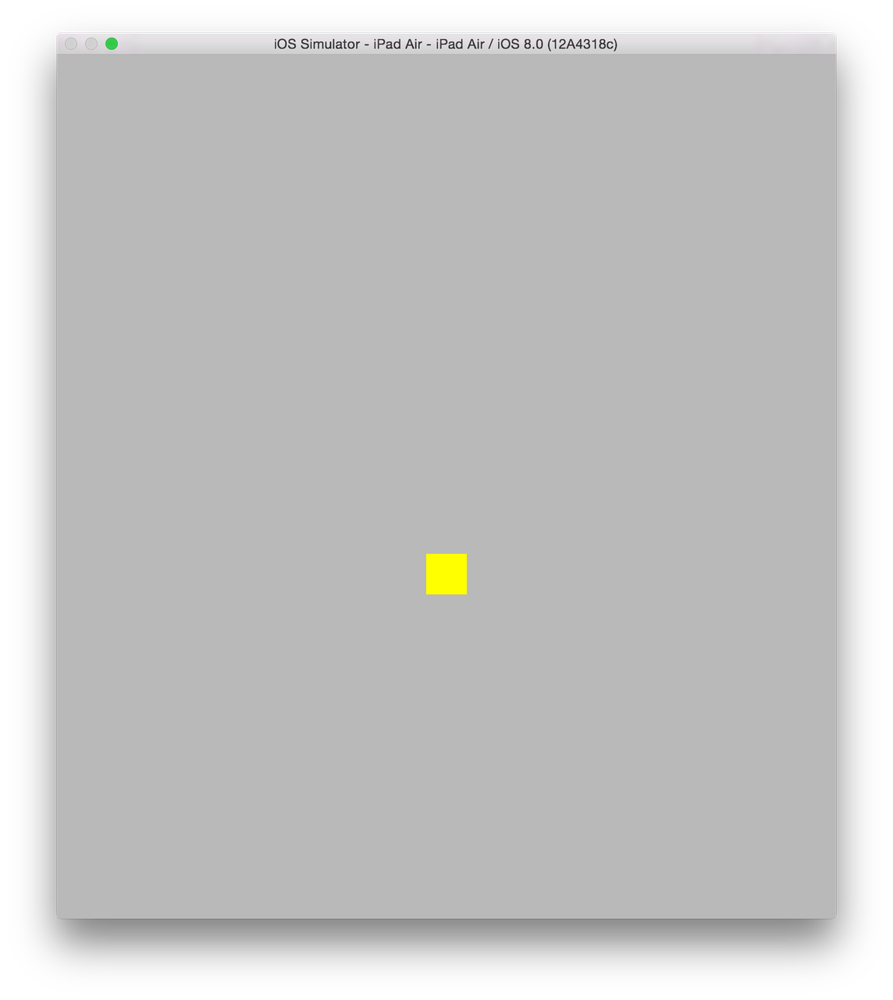
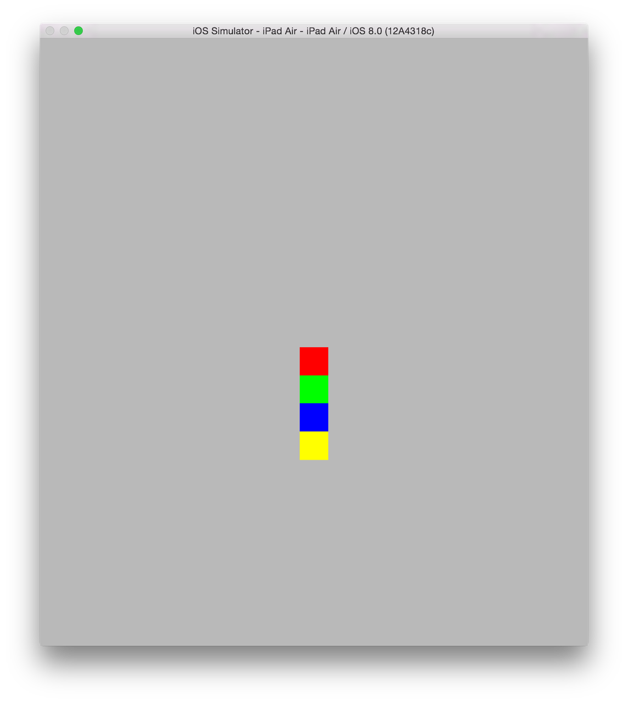

Playing with Swift and SpriteKit
I've always wanted to learn how to write native apps for iOS and the Mac as long as either has existed. However, the barrier of entry has always been too high, given that I only ever had time to play with them as a hobby. The Objective-C programming language is a bit complicated to learn, especially alongside all the memory management that you have to do (and it doesn't help that Apple has gone through several memory management schemes through Mac OS X versions). To add on to that, the Cocoa framework is huge, and it's quite daunting to even know where to get started with it.
With Apple's announcement of the Swift programming language in June, it was clear to me that the language would significantly lower the barrier of entry. The XCode 6 beta is now public (i.e., you do not need to have a paid Apple Developer account to access it), so anyone can play with Swift.
Note that I am still very new to both Swift and iOS development in general, so it's quite likely that some of the things I mention here are actually bad ideas. If you know more than I do and spot a bad thing that I am doing, please mention it in the comments.
It's also possible that some of the assumptions I've made about the Swift language or the SpriteKit framework are actually wrong. Please remember that I am still a beginner and take what I say with a grain of salt.
The Swift Language
If you don't know how to program at all, I don't know how well this will work for you. I already know several language, especially Python, so my experience derives from that.
First, read through the Swift language guide. If you have XCode 6, you can read it interactively as a Playground. I only have read through the first part so far, which gives a high-level overview of the language.
The Swift language is actually quite easy to learn, especially if you already know a high-level language like Python. A few important things:
-
varandletseem a bit confusing. The difference is actually quite simple:vardenotes a variable that can change andletdenotes a variable that cannot. You could in theory just usevarfor everything, butletlets the compiler spot mistakes for you, and it also probably lets it make your code faster. If you intend to never change the value of a variable, uselet. -
Swift uses type inference, meaning that you usually don't need to specify types. But when you do, you do so by putting a
:after the variable name, likevar a: Int = 2orfunc f(a: Int). The exception is the return type of a function, which uses the arrow->(if you are familiar with Python 3 type annotations, the syntax is exactly the same),func f(a: Int) -> Int. -
Swift uses
?after a type name to indicate that a variable could be its given type, ornil. If you are familiar with Haskell, this is like the Maybe monad. I know very little Haskell, so I don't know if Swift's implementation of?is truly a Monad.Roughly speaking, in many circumstances, you don't know if a variable will actually be the given type or not. A good example of this is with dictionaries.
var a: [String: Int]creates a dictionary that maps strings to integers. If you manipulate this dictionary, and then access a key from it, likea[b], there is no way for the compiler to know if that key will really be in the dictionary. If the key is in the dictionary, you will get the value of that key. Otherwise, you will getnil. Hence, the type ofa[b]isInt?.Swift uses
!to indicate that the value is notnil, which tells the compiler to compile code that doesn't check for that case.For the most part, you can ignore this as well, at least when you start. Just write code as you would, let XCode add in the types for you, and only worry about types if the compiler tells you something is wrong.
-
Swift functions often require the parameters be named, for instance, you have to write
CGSize(width: 1, height: 2)instead of justCGSize(1, 2). This is both for clarity (the former is much easier to read if you aren't familiar with the API forCGSize), and because Swift allows polymorphism, i.e., you can define different initializers for the same class with different type signatures. For example,CGRectcan be initialized asCGRect(origin: CGPoint, size: CGSize)orCGRect(x: Int, y: Int, width: Int, height: Int). This can lead to ambiguities in some cases unless you explicitly tell the compiler which version to use.
I've found Swift to be a very strict language. I don't mean this in the sense described by this Wikipedia article. What I mean is that Swift typically only lets you do things one way. This is similar to Python's "one way to do it," except Swift enforces this at the language level.
A nice example of this is that I rarely get a warning from the Swift compiler. Just about every message I've gotten from the compiler has been an error. The difference is that the program will still compile and run with a warning. This is different from C, C++, and Objective-C, which have many warnings that the compiler will still compile with. These warnings usually are for things like an incorrect pointer type. Since there is really only one type in C, the integer (because all data in memory is just integers), the program can still run even if you mix your types up a bit.
There are also many cases where Swift seems maybe too strict about things,
although it's clear that it is doing it to try to stray people away from
common mistakes and antipatterns. For example, the condition of an if
statement in Swift must always be of type Bool. Unlike languages like
Python, things do not have implicit boolean values. if 1 is a syntax
error. So is if a unless a is type Bool.
This ends up not being a big problem. The things Swift forces you to do feel like good programming practices. This is not unlike how Python "forces" you to keep your code indented correctly. It feels very different from a language like Java, where the things that you are forced to do all feel like they are there simply to make the compiler writer's life easier. And indeed, unlike Java and Objective-C and much like Python, Swift code requires very little boilerplate. There are no header files for instance.
So all said and done, I like Swift. I don't like it as much as Python (I also
don't have my head wrapped around it as much as Python). But it's far better
than Objective-C, and that's what matters. Frankly, my biggest gripe with it
is the ubiquitous use of CamelCasing and two letter prefixing (NS, CG,
SK; I don't know if there's a name for this) in the API. I adamantly refuse
to do this with my own variables, because I believe CamelCase reduces
readability over underscore_casing. I like the Python convention to use
underscore_casing for variables, functions, and methods, and CamelCase for
classes (because classes are kind of like proper nouns, and CamelCase is as
close to Capitalization as possible in programming language conventions).
Learn to read Objective-C
While it is not necessary to write Objective-C any more, it is a good idea to know how to read it. The reason is that a lot of good resources on the internet are still in Objective-C (also a lot of Apple's example documentation). The API names are the same, so this mainly boils down to understanding how to convert the basic syntax to Swift. Reading the section of the Wikipedia article on the syntax of Objective-C should be enough.
For instance
[touch locationInNode:self]
would be translated to
touch.locationInNode(self)
Use XCode
If you are comfortable with the Swift language itself, you should get started with a project.
First off, you should use XCode to edit your code, at least to begin with, even if you are accustomed to using another editor. The reason is that XCode is going to do a lot of things for you which will make your life easier and reduce the complexity significantly as you get started. Once you are comfortable, you can move to another editor.
Some things that XCode will do for you:
-
Autocompletion: The best way to figure out the Cocoa APIs is to use the autocompletion. This pops up when you want to override a method in a subclass, create an object from an existing class, access an attribute of a class, or instantiate a class or call a function (remember that Swift is polymorphic, so it's useful to know all the possible ways to instantiate a class or call a function).
-
Compiler errors and warnings: Swift, being a strictly typed language, will give you a lot of useful compiler errors. It's pretty hard to write a program incorrectly from a type point of view, and have it even compile. XCode integrates this nicely, and it even offers suggestions on how to fix things every once in a while (so that you can just click the button and have it fixed inline).
-
Direct interaction with the iOS Simulator: One button will compile your code and start the simulator. If your target is Mac OS X, it will open the application.
-
Debugger: Clicking to the left of a line will set a breakpoint in the debugger. The Swift debugger seems pretty limited right now. I wasn't able to get any useful information out of the variables view when I used it. But in my experience using XCode in the past to debug C, its graphical debugger is one of the best.
-
Configuration settings: If you click on the XCode project in the files view (the root node of all the files), you get a view with all the different settings for your project. Most of these you probably won't want to change, but a few are important, like what devices and orientations you want to allow, what operating system versions you want to support, and the name and version of your project. Editing these outside of XCode requires editing an XML file, which is no fun.
Of course, any editor can potentially do these things, and I'm really looking
forward to the point where I can just use Emacs to edit Swift code, as the
XCode editor as an editor is quite annoying. XCode was the editor that I used
before I switched to using Emacs, and it's not gotten much better. There are
still several visual glitches in the editor environment, especially with the
scope coloring and syntax highlighting. You can edit the keyboard shortcuts in
the XCode setting to get some things the way you like them (although I found
that trying to set TAB to autoindent did not work). You can also use a tool
like Karabiner (previously
KeyRemap4MacBook) to enable Vim or Emacs editor shortcuts everywhere
(including XCode). It doesn't help that XCode 6 is still in beta (at some
point the editor backend died and all syntax highlighting and tab completion
stopped working; I managed to fix it by removing a spurious ! in the code)
The iOS Simulator
One disappointing thing that I learned is that you cannot run any iOS program you write on an iOS device unless you are in the paid developer program (or if you Jailbreak and are willing to go through some hoops). The iOS developer program costs $100 a year, and since I'm not sure yet how far I am going to go with this, I am holding off on it.
The only other option then is to run on the simulator. The simulator is fine, the only issue is that there are limits to how you can simulate a touch screen on a computer with a mouse.
A few things to note about the simulator:
-
There are several things you can do with the "hardware" from the hardware menu, such as rotating the device or pressing the home button.
-
It's worth remembering the keyboard shortcut for pressing the home button, ⇧⌘H, as you can press it twice in quick succession just like on a real device to open the task manger. You can then drag your app up to completely reset it, without having to restart the simulator.
-
The retina iPad is taller than your display, even if you have a 15" retina display. So be aware that you will need to scroll up and down to see it all. Alternately, you can use a smaller device, like an iPhone, or rotate it to landscape, where it all fits.
-
The only way to do multitouch is to hold down the Option key. This will create two fingers. However, it's quite limited as the two fingers are always centered around the center of the screen. Therefore if you want to test multitouching two objects, you'll have to position them symmetrically so that you can grab them both.
Getting started with a project
The best way to start is to start a template project with XCode. I personally
started with a SpriteKit game for iOS. This created a basic template "Hello
World" Swift file with the basic SKScene subclass. Go ahead and compile and
run this in the simulator to see what it does.
There are four important methods of SKScene which you will want to override,
didMoveToView, touchesBegan, touchesEnded, and update. didMoveToView
is the initializer for the scene. Anything that should be set up and appear
from the very beginning should go there. touchesBegan and touchesEnded are
called when a finger touches the screen and when it leaves the screen,
respectively. Remember always that iOS devices are multitouch devices, so
these events can happen concurrently, and there can be multiple touches
happening at once. The first argument to these methods is a set of touches,
which you should iterate over to perform actions (the "Hello World" example
shows how to do this). Finally, the update method is called every time the
scene is updated, at each "frame" essentially.
There are other methods, for instance, touchesMoved. However, I discovered
that you don't actually want to use touchesMoved to do what you would think
you'd use it for, namely, to move stuff around. The reason is that there is no
easy way to sync up multitouches between touchesBegan (where you know what
thing the finger started on) and touchesMoved to move it around. It works
well for a single touch, but if you want to be able to move multiple things
around at once (which I highly recommend, as it leads to a much nicer user
experience), you have to do things a little differently, as I'll explain
below.
Adding some objects to your environment
There are a lot of classes to create various objects of various shapes. I
started with SKSpriteNode, which creates a simple square, because I wanted
to play around with touch events.
I started out with four sprites (yes, it would be better to put these in an array, and probably abstract them to a method):
let sprite1 = SKSpriteNode(color: UIColor(red: 1.0, green: 0.0, blue: 0.0, alpha: 1.0), size: CGSize(width: 30, height: 30))
let sprite2 = SKSpriteNode(color: UIColor(red: 0.0, green: 1.0, blue: 0.0, alpha: 1.0), size: CGSize(width: 30, height: 30))
let sprite3 = SKSpriteNode(color: UIColor(red: 0.0, green: 0.0, blue: 1.0, alpha: 1.0), size: CGSize(width: 30, height: 30))
let sprite4 = SKSpriteNode(color: UIColor(red: 1.0, green: 1.0, blue: 0.0, alpha: 1.0), size: CGSize(width: 30, height: 30))
These lines go at the class level. This lets them be accessed from within any method of the class.
One thing I could not figure out how to do was how to access class variables from within other class variables. In Python, you can do
class Test:
a = 1
b = a + 1
But in Swift, if you do
class Test {
let a = 1
let b = a + 1
}
it tells you that Test.Type does not have a member named 'a' on the let b = a + 1 line.
You may have to use properties with getters and setters in this case, which I
didn't feel like fooling with. The result is that I did not abstract out the
CGSize(width: 30, height: 30) into a common variable.
The didMoveToView method then becomes
override func didMoveToView(view: SKView) {
let center = CGPoint(x:CGRectGetMidX(self.frame), y:CGRectGetMidY(self.frame))
for s in [sprite1, sprite2, sprite3, sprite4] {
s.position = center
self.addChild(s)
}
}
The self.addChild is the most important method here, as it actually puts the
sprite in the main view. If you forget this line, none of the sprites will
show up.
If you run this, you will only see the yellow box, because you put them all on top of one another in the center of the view.
Adding Basic Physics
We could change the positions so that they do not overlap, but the option I
went with was to play around with the physics a little. SpriteKit has a nice
2D physics engine built in, and it's quite easy to use.
So my final didMoveToView was
override func didMoveToView(view: SKView) {
/* Setup your scene here */
let center = CGPoint(x:CGRectGetMidX(self.frame), y:CGRectGetMidY(self.frame))
for s in [sprite1, sprite2, sprite3, sprite4] {
s.position = center
var physics_body = SKPhysicsBody(rectangleOfSize: CGSize(width: 30, height: 30))
physics_body.affectedByGravity = false
physics_body.allowsRotation = false
s.physicsBody = physics_body
self.addChild(s)
}
}
For each sprite, I create an SKPhysicsBody with the exact same size as the
SKSpriteNodes (there's probably a more direct way to do this), and attach it
to that node. The affectedByGravity property is important. If you don't set
it to false, all the objects will fall off the bottom of the screen. I
disabled allowsRotation because I wanted my squares to stay
upright. Otherwise when when the squares hit one another they will rotate in
space.
Now SceneKit will prevent the squares from overlapping with one another, even
if we put them on top of each other as we have done.
So now when we start the simulator, we see
Making the squares movable
Now, let's make it so that we can move these squares around. The correct way to do this took me some time to figure out. I finally got some hints from this site.
The key thing here is that the UITouch objects remain the same objects for
the duration of the touch. Their position is updated when the touch
moves. Hence, you just need to associate each touch with the node that was
touched when the touch began, and move the node to the position of that touch
with each update.
To start, we will create a dictionary on the class mapping touches to nodes
var selected: [UITouch: SKNode] = [:]
Then, in the touchesBegan method, map every touch to the node that it
touches.
override func touchesBegan(touches: NSSet, withEvent event: UIEvent) {
/* Called when a touch begins */
selected = [:]
for touch: AnyObject in touches {
let location = touch.locationInNode(self)
selected[touch as UITouch] = nodeAtPoint(location)
}
}
The as UITouch part is needed because the compiler only knows that touch is
AnyObject. This was one of the things that was helpfully suggested by the
compiler, so I did not really need to know what I was doing to get it right.
Note that even if you touch the background behind the squares, you are still
touching a node, namely, the GameScene node itself (the node for the class
you are working on). This is a very important observation, as it will tell us
how to get the right position for the node when we update it. It also means
that we should keep track of which nodes we actually want to be moved by the
touch. Trying to move the GameScene node is ignored, at leads to a lot of
console logs, so we should avoid it.
Next, let's write the touchesEnded method. This method is simple. If a touch
ends (the finger is removed from the screen), we should remove it from the
selected dictionary.
override func touchesEnded(touches: NSSet, withEvent event: UIEvent) {
for touch: AnyObject in touches {
selected[touch as UITouch] = nil
}
}
To delete an item from a dictionary in Swift, just set it to nil.
Now, finally, we need to write the update method to move the node to the
current position of the touch.
The simplest way to do this is
override func update(currentTime: CFTimeInterval) {
/* Called before each frame is rendered */
for (touch, node) in selected {
if !contains([sprite1, sprite2, sprite3, sprite4], node) {
continue
}
let location = touch.locationInNode(self)
node.position = location
}
}
Note that we only modify the position for the four sprite nodes.
The touch.locationInNode(self) part took me a long time to figure out. There
are other methods, like touch.locationInView(nil), but this does something
very strange where the the horizontal axis was doubled (moving the touch one
inch moved the object two inches), and the vertical axis was inverted. If
someone knows what was going on there, please let me know.
Modifying the position directly is nice, but it's nice to play around a little bit with a third thing from SpriteKit, actions.
What we will do instead of setting the position of the node is to tell
SpriteKit to move the node there in a certain amount of time. If we make this
time small enough, like 0.01 seconds, it will appear to act exactly the
same. If we up this time, there will be a smooth "lag" where the node catches
up to the touch. Because the movement always happens in the same amount of
time, it will move faster if the finger is farther away. This gives the
squares a nice "frictioney" effect with some springiness to it, which is quite
nice.
override func update(currentTime: CFTimeInterval) {
/* Called before each frame is rendered */
for (touch, node) in selected {
if !contains([sprite1, sprite2, sprite3, sprite4], node) {
continue
}
let location = touch.locationInNode(self)
let action = SKAction.moveTo(location, duration: 0.1)
node.runAction(SKAction.repeatAction(action, count: 1))
}
}
There are many other actions we can perform, like rotations and color changes.
Conclusion
Here is an example of the movement. You can see it works even with multitouch. You can also see the collision physics cause the other squares to move out of the way when another square hits them.
Here you can see the movement lag caused by using SKAction.moveTo with
duration: 0.1 (note that the mouse itself jumps a bit at the beginning, but
this is due to lag in the recording).
I have uploaded the full code to GitHub.
This isn't exactly a "game", but it does lay down the foundations for what you would need to write a game in Swift using SpriteKit. At least for me, it shows me the technical basics of how to write some games that I had thought about, which mostly involve making shapes and moving them around the screen.